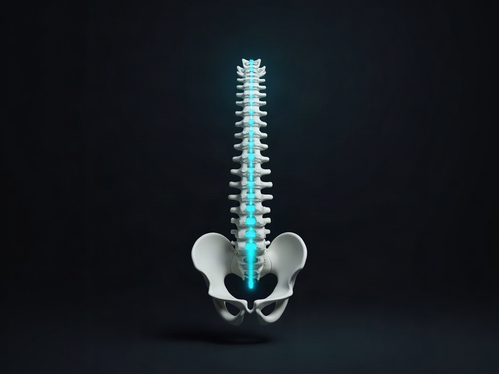

The pain runs from your back down your leg
Sciatica is what people call it when pain starts in the low back or the buttock and travels down one leg. Since the crash, in your case. This is the San Rafael practice for auto-accident injuries, and before we examine you the price of the evaluation goes in writing.
This page is general information, not medical advice. An examination is needed to know whether we can help you.
Waiting it out, and what the wait costs
Nobody needs to be frightened into an examination, so this section is going to argue from paperwork instead.
The three things people do after a crash are: nothing, on the reasonable hope it settles; painkillers from urgent care; or postponing all of it until the insurance claim is done. Travelling leg pain has a habit that makes those choices worse than they look. It waxes and wanes. You feel noticeably better on the morning you were going to call, decide you overreacted, and feel considerably worse a fortnight later, with nothing written down about either stretch.
That is the cost of waiting, and it is a documentation cost. The interval between the collision and your first examined, dated finding is an interval your medical record cannot speak for. It says nothing about how quickly this practice can see you, which is a different question we are not answering on this page.
One exception to all of the above: a small set of symptoms means emergency care rather than an appointment anywhere. They are listed in card 4 below, and they are worth reading before anything else on this page.

Three things you can do after reading this page
01
Find out what is actually compressing the nerve.
Sciatica describes a symptom, not a diagnosis. The examination locates the level it is coming from and the likely structure, a disc, a joint or the soft tissue around it. Each of those changes the plan, which is why the label on its own is not much use to you.
02
Know the cost before you commit.
The price of the evaluation goes in writing beforehand, and the funding routes are resolved on the money page rather than in fragments here.
03
Get the finding recorded while the injury is recent.
The distribution of the pain, what the straight-leg tests show, and any measurable weakness, written down as objective findings on the day rather than reconstructed later.

What the examination actually consists of
Card 1. The symptom map.
Where the pain begins and how far down it travels. Whether sitting or standing is worse, because that difference is genuinely informative. Whether anything is numb or weak as opposed to painful. And all of it taken against the mechanics of the collision: the direction of impact, whether you were braced, which way you were turned. Not against your mattress or your shoes.
Card 2. The examination.
Neurological testing through the affected distribution, orthopaedic testing of the lumbar spine and pelvis, and the work of telling a disc-referred pattern apart from a joint or soft-tissue one. That distinction is the difference between treating the leg and treating the thing sending pain into it.

Card 3. What conservative care involves.
Many patients prefer to try conservative care before considering surgery or long-term medication. We can tell you whether we think we can help. In practice that means settling the irritation, hands-on work, graded movement, and manipulation to the lumbar spine and pelvis where it is tolerated, with progress judged against the findings we took at the start rather than against how you say you feel on the day.
Card 4. Where we stop, and when to go elsewhere.
We are not a medical doctor's office. No surgery, no prescriptions. We are not a law firm, and this is not an emergency room.
Get emergency care rather than an appointment if you have any of these: loss of bowel or bladder control; numbness through the saddle area, meaning the parts of you that would touch a saddle; or weakness in the leg that is getting worse by the day.
Go to an emergency department. That takes priority over an appointment here, and over whether it is convenient.
Imaging, where the examination warrants it, is performed by another provider. We name no facilities and we imply no formal network. Around the care itself we can truthfully offer orthopaedic and neurological examination, chiropractic adjustment, which is a controlled movement applied by hand to a joint that is not moving well, insurance verification, medical-lien billing and coordination with your attorney. What a first appointment involves: your first visit.

Proof you can check, or none at all
Two population statistics used to sit on this page, about how many adults get sciatica and at what ages. Neither carried a source. Both are gone, and they are not coming back without a live, dated one, because a number a reader cannot check is decoration.
The discipline behind that is worth stating once. It is not hard to find a large regional practice whose own website gives two different answers to how many locations it has and how many patients it has seen. Every number we publish has to survive being counted by a stranger, or it does not go up. On this page that leaves the boundary in card 4 as the claim we stand behind.
What this page replaces
The page that used to sit here blamed a soft mattress and high heels for an injury sustained in a collision, warned readers about paralysis and loss of bladder control if they did not seek care, described care as putting the spine back into line and bringing quick relief, called one form of care the superior option over surgery and medication, and never once mentioned what any of it would cost.
The owner's 2026 decision on that set of claims was to drop all of them. The surgery comparison came back as a patient preference and a professional opinion rather than as a ranking of treatments, and the fear list came back as the red-flag box in card 4, which points away from this clinic instead of towards it. Same facts, opposite direction of travel.
The stance line: we will tell you what we found and what we think we can do about it. We will not tell you what will happen to you if you do not book.
Around here, crash work is usually filed away somewhere inside a general practice, a few clicks down under a menu of symptoms. On this site the crash and the money question sit at the front, and every condition page routes back into them.
Questions a sciatica page actually receives
Will this go away on its own?
Often it improves. Sometimes it does not. That is an honest answer rather than a hedge, and the examination is what tells you which situation you are in, because the two look similar in the first fortnight. We will not put a recovery time on it.
Do I have to see a surgeon?
Not usually, and it is not our decision to make. That question is normally reached through what the examination finds, how the injury responds to conservative care over a period, and a surgeon's assessment where one is indicated. We can tell you whether we think we can help, and we can tell you when we think you need somebody else.
Who pays for this?
No rate card is published here. Care after a collision is funded through auto or health insurance, a medical lien against the personal-injury settlement, or cash, decided case by case. Locally, the practices that do explain payment tend to stop at four routes and leave out the one for uninsured drivers. There are five, and they are all on one page. How care is paid for.
What if the claim fails, or settles for less than the bill?
You owe nothing. That is the whole answer. Care is on a lien, you are billed nothing while the case is open, we are paid from the settlement, and if the case is not accepted, is lost, or settles for less than the bill, the balance is written off in full.
I do not have an attorney. Will you still see me?
Yes. We are not a law firm, we do not require representation, and we are not going to tell you that you need any. If you do have an attorney, we will speak with them about your care.
The written Good Faith Estimate comes first, before the examination: what it covers, what would be billed separately, and who owes what. The written estimate.